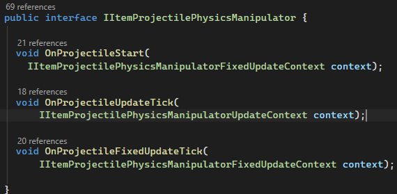
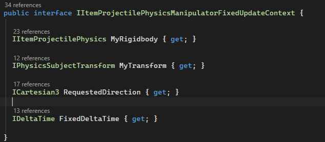
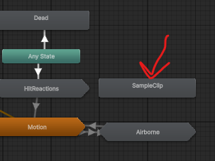
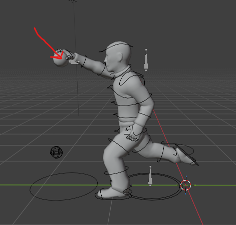
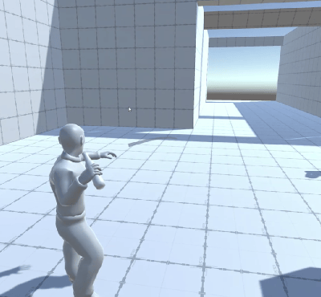
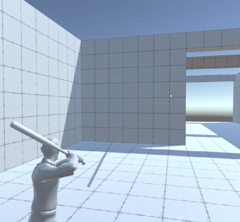
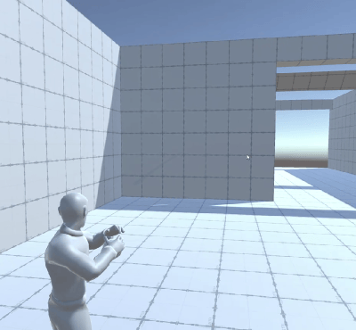
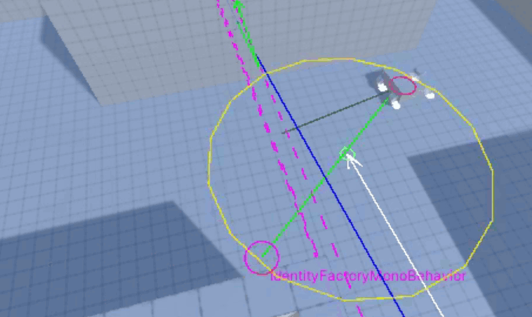

Personal Project
June 2026 - Making the AI and Player Understand Trajectories
Problem
I want NPCs to be able to throw physics-based projectiles at targets without missing horribly.
I want the player to have some intuition about where a particular throw will go.
Scope
In order for this to work, I need it to:
- Work in realtime without dipping framerate below 144 frames per second.
- Work with any projectile type that can be thrown without requiring me to do data entry.
- Understand where each item will be release from during the "throw" animation.
- The simulated projectile should 1:1 match the real trajectory.
- I don't want the users of this to be hard-coupled with Unity3D in case Unity3D tries to chair pull their licensing again. In that case, I can port it to a new engine and minimize the impact to my codebase.
- I could eliminate the need to calculate trajectories at runtime if I wrote something to save these trajectories to file at build/compile-time.
- The display of the trajectories to the player is very much a placeholder and could be improved.
Technical Approach
Building Blocks
Physics Simulation - Unity3D allows you to run scenes simultaneously. So, you can have your visible scene and a secondary scene which is not rendered and it can run faster than realtime. So, I decided to create a second scene which is run in the background and can handle various physics simulations.
To keep the live physics and simulated the same, I created a PhysicsManipulator interface & implementation per projectile.
This is necessary because projectiles might have starting torque/velocities or some propulsion to make them move in a game-like quick motion instead of being grounded in true physics. The interface looks like below:

It has a context too to keep it testable. You can see it has a rigidbody & transform to manipulate. The context is below and that is how the manipulators modify the projectile.

Animation Throw Release Point Querying - Unity's animation API is a bit odd and it seems this use case is uncommon, so I had to experiment with a few approaches. What ended up working is adding an empty animation clip to my animator named "SampleClip" like below:

In order to see where the release point of a throw is, I put my animation into SampleClip, skip forward to the release time, and sample the release bone's position. That lets me grab the local position and local rotation below from the baseball throw:

Result
For the Player...
The player calls this whenever an item is equipped continuously. Doing this without a cache of recent results created garbage collection issues, so I had to make it cache based on the player's rotation and return the result if it's been already done.It looks like below when it's rendered. The grey line is the preview of the trajectory.



I can keep a reliable 200+ frames per second while doing this, so I am happy with the initial performance.
For NPCs...
NPCs call the same API that the player does except they don't render the points, they use it to calculate the trajectory and to determine if they need to rotate to hit their target.NPC using the API to aim and throw a pizza and hit the player:

Next Steps...
Jan 2025 Update
Vehicle AI
One feature I was interested in was making an AI which is capable of driving a vehicle.
The main challenge that type of AI creates is that Unity's default nav mesh agent does not work because there is no sense of a turning radius
This means some parts of the NavMesh API can be used, but the path-finding needs to be done using custom code. Additionally, the approach I am looking to use should work in realtime. It should also be possible for multiple vehicles to simultaneously exist without slowing down the game's framerate.
In order to perform the path-finding, I decided to employ hybrid A*. This means that the path-finding takes in the parameters of a vehicle and can generate subsections of a route using the vehicle's parameters as opposed to just walking through the nav mesh as it would if it was a standard "nav agent".
I was able to make this work by employing hybrid A* from one point to another and using BFS to expand the search depth. One challenge is that the number of routes evaluated needs to be greatly reduced because it would create performance issues to evaluate a large number of routes in a single frame.
The results look like this:

The lines in the image represent:
- White Line = option for the path which is being searched for.
- Non-Bright Green lines - The path being traversed.
- Circles - Waypoints along the line
- Bright Green Lines - Heuristic path was found. This means the vehicle no longer needs to do path-finding, it's just a straight line to the destination.
At runtime, the vehicles also use a hierarchical state machine to traverse the routes. The routes can also be cached so that as one route is completed, subsequent sub-states can reuse the same path without needing redundant path-finding requests.
Future iterations of this could include features such as detecting when a vehicle is stuck and creating an algorithm to "unstuck" the vehicle. Secondarily, accounting for the vehicle's velocity during path-finding's evaluation of route options could help avoid picking routes which require driving slowly in reverse for a long time/attempting to drive in reverse while already driving forward at a high velocity.